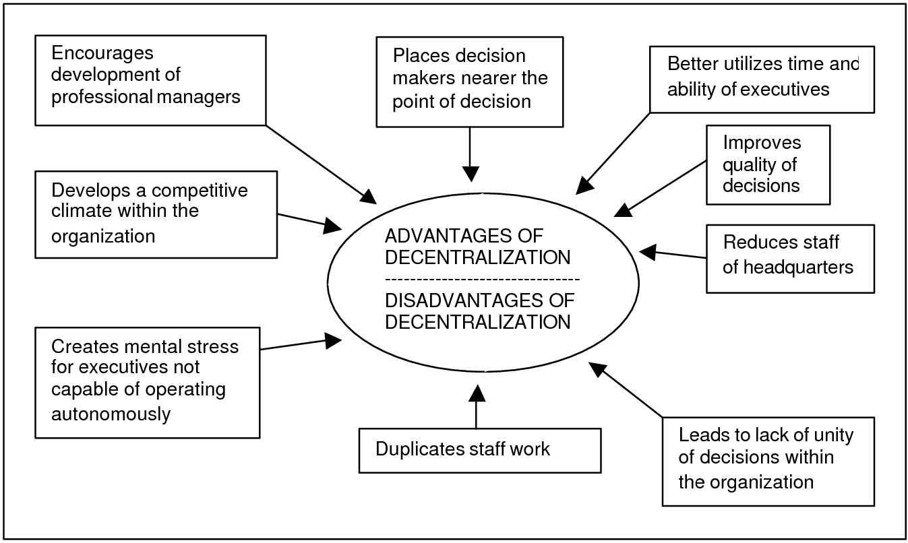

Media companies in Europe are traditionally privately owned. As a result, profit margins in European media industry are low. The increasing speed of information technologies make it necessary for the European media companies to rely on untraditional ways to gather news. Study after study shows that increasingly more journalists are relying on blogs and other "unprofessional" information sources to tell their stories. Although this causes some resentment within the journalism community, European journalists are not as devoted to objective news gathering as the American journalists are.
Because the European method of journalism is traditionally literary and commentary based their transition into the digital realm of journalism has been fairly unchallenging. Their smaller industries are adaptable to change and in most cases, their journalists welcome it. Many are optimistic about the opportunities that digital technologies have brought to the journalism profession.
Features of the European Model
- Close relationship with political world
- Focus on commentary, interpretation and advocacy
- Committed to "literary" writing
- Overall more literary, political, and intellectual
- Seen as "old-fashioned"
- Profession overall has a low status, and is viewed as a lowly occupation
- Studied through frame of nation state
- Shaped by society, politics and culture
- In most European countries, journalism and the media are voices of organized groups
- Political neutrality is very difficult because of the many political forces
- Based more on opinion and less on news
- Journalism of expression, not observation
Decentralized Newsrooms

Source: http://www.grin.com/en/e-book/10822/transfer-pricing-for-multinational-enterprises-an-integrated-approach
- European newsrooms are decentralized
- Journalists themselves perform many tasks and there is no clear division of labor
- Involved in every aspect of reporting, from information gathering to writing, editing and commentating
- This leaves the journalist more freedom to act on their advocacy or missionary roles
Changes in Profession
- Broadcast journalism played a large part in the changing of European journalism
- It gave them more freedom from the state, weakening their ties to political parties
- Broadcast journalism allowed for greater competition, initiating a higher demand for journalism the "American" way. Citizens in Europe were now able to seek American broadcasting stations
- Development of journalism schools helped European journalists to learn American journalism techniques
- Transition from politics to entertainment and information
Effects of the Digital Age
- Some European journalists are pessimistic about digital journalism
- According to an Oriella PR survey, one-half of journalists working in traditional formats thought their channel would fold, and one-sixth said it already had
- In Sweden, for example, one-third of traditional channels have closed and one-sixth have completely transferred online
- About 46% of journalists say they were expected to produce more work, and 30% said they have been working longer hours
- 28% of journalists have significantly less time to research stories, leading to potentially decreasing accuracy and quality
- However, many are optimistic as well
- 40% of journalists said digital media provides exciting new opportunities
- One in five publications now has a mobile app, which provides a new way to reach readers and a new source of revenue
- 41% of European publications now run a Twitter feed
- Digital media lets readers get their news how they want it, when they want it, and enables increased interactivity